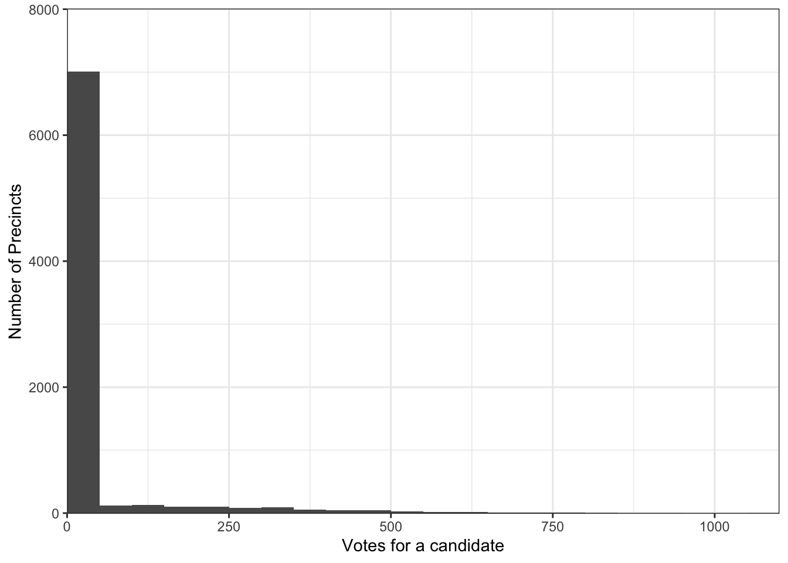
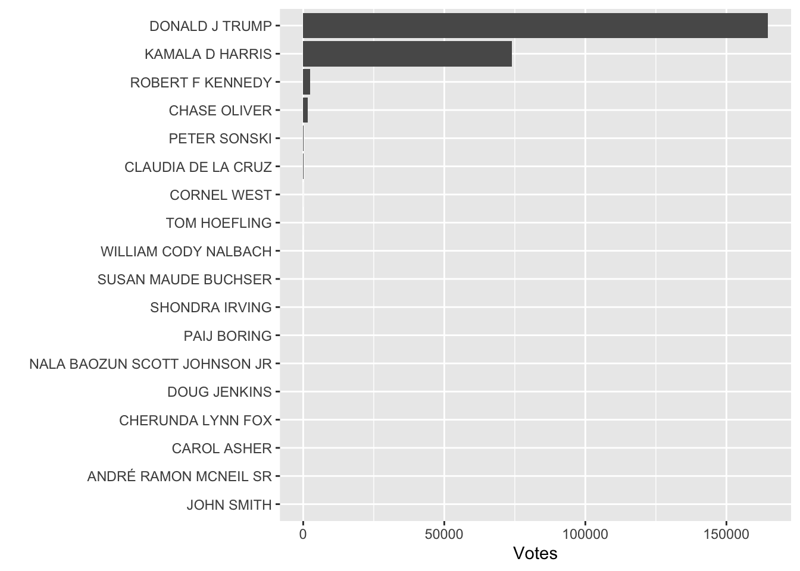

Election JurisdictionName ReportingCountyName
1 2024 General Election Statewide Prairie County
2 2024 General Election Statewide Prairie County
3 2024 General Election Statewide Prairie County
4 2024 General Election Statewide Prairie County
5 2024 General Election Statewide Prairie County
6 2024 General Election Statewide Prairie County
DataEntryJurisdictionName DataEntryLevelName Office
1 Clearwater-A Precinct US President & Vice President
2 Clearwater-A Precinct US President & Vice President
3 Clearwater-A Precinct US President & Vice President
4 Clearwater-A Precinct US President & Vice President
5 Clearwater-A Precinct US President & Vice President
6 Clearwater-A Precinct US President & Vice President
OfficeCategory BallotOrder
1 Presidential Electors For US President & Vp 20
2 Presidential Electors For US President & Vp 20
3 Presidential Electors For US President & Vp 20
4 Presidential Electors For US President & Vp 20
5 Presidential Electors For US President & Vp 20
6 Presidential Electors For US President & Vp 20
NameonBallot PoliticalParty
1 André Ramon Mcneil Sr. (W/I) Independent
2 Carol Asher (W/I) Independent
3 Chase Oliver & Mike Ter Maat Libertarian
4 Cherunda Lynn Fox (W/I) Independent
5 Claudia De La Cruz & Karina Garcia (W/I) Party For Socialism And Liberation
6 Cornel West & Melina Abdullah (W/I) Independent
Winner NumberofOfficeSeats TotalVotes
1 No 1 0
2 No 1 0
3 No 1 4
4 No 1 0
5 No 1 0
6 No 1 0
table(indiana_raw$DataEntryLevelName) # we have 1 entry that is incorrect, deal with that first
Locality Prairie County Precinct
1 272 1 7863
#indiana_raw %>% #filter(DataEntryLevelName == "Prairie County") # looks like fields were shiftedrows <- indiana_raw[c(322, 323), ] # these rows got shiftedcorrect_row <-unlist(c(rows[1, 3:13, drop =TRUE], rows[2, 1:2, drop =TRUE]))indiana_raw[322,] <- correct_row # fixed rowindiana_fixed_322 <- indiana_raw[-323,] # row with empty values removed
To create the precinct column, I drop the “locality” rows under the assumption that localities are not precincts and keep only the observations that are precinct entries. I then copy over the data from DataEntryJurisdictionName to create the cleaned precinct column, and per the instructions, leave the names exactly as they are as there is no shapefile to suggest otherwise.
# dropping the locality-type data to isolate precincts onlyindiana_precinctsonly <- indiana_fixed_322 %>%filter(DataEntryLevelName =="Precinct") %>%# creating a new column called precinct for cleaned datasetmutate(precinct = DataEntryJurisdictionName) %>%select(-DataEntryJurisdictionName, -DataEntryLevelName)
To create the office column, I use string detection for the values listed in the codebook.
# table(indiana_precinctsonly$Office)indiana_office <- indiana_precinctsonly %>%mutate(office =str_extract(# make the original column upper-casestr_to_upper(Office), # this particular dataset only has presidential data, so extract that pattern"US PRESIDENT")) %>%select(-Office)
Next, create the party columns, party_detailed and party_simplified. There are no parties listed as nonpartisan because the presidential election is partisan:
# table(indiana_office$PoliticalParty)# we do not seem to have any of the special cases noted in codebookindiana_parties <- indiana_office %>%mutate(# first, party detailed: simply make it upper caseparty_detailed =ifelse(str_to_upper(PoliticalParty) =="DEMOCRATIC", "DEMOCRAT", str_to_upper(PoliticalParty)),# give simplified values based on detailed party, making independents and local/smaller parties "other"party_simplified =case_when( party_detailed %in%c("DEMOCRAT", "REPUBLICAN", "LIBERTARIAN", "OTHER") ~ party_detailed,.default ="OTHER")) %>%select(-PoliticalParty)# table(indiana_parties$party_detailed)# table(indiana_parties$party_simplified)
Now, dealing with the number of votes. There was one row with a negative value, -8, which is invalid. Rather than count those votes not knowing if this was an error, I elected to mark it as an error and set it to 0. After making the column numeric, I identified a precinct that had 999999 votes, a value that is sometimes used for redacting data, but since it is a valid number, I elected to leave it.
fips <-read.csv("part1_fips.csv")# all counties in our dataset are in the fips file# length(unique(indiana_votes$ReportingCountyName))# length(unique(indiana_votes$ReportingCountyName)[unique(indiana_votes$ReportingCountyName) %in% unique(fips$county_name)])# using right_join so it takes the name of the fips county columnindiana_counties <- fips %>%right_join(indiana_votes, by =c("county_name"="ReportingCountyName")) %>%mutate(county_name =str_to_upper(county_name))# sum(is.na(indiana_counties$county_fips)) # merged successfully
Jurisdiction name will be the same as county name:
In the vote column, I identified two observations that were either invalid or were unusual, one precinct that marked -8 votes for a candidate, and a precinct that had 999999 votes for a candidate. I noted these issues using string detection for non-numeric characters and using the summary function to find unusual numbers. For the negative value, I chose to mark it as zero, not knowing if it was a typo or if that was how the state marked redacted or other data, rather than assume it was an error. The 999999 I chose to remove as well, since sometimes that value is used to denote missing data. To ensure these values are coded correctly outside of this assessment, I would go about fixing these two errors by reading a codebook from the state first to see how they identify redacted data, and then reach out to them directly if the documentation didn’t clarify those aspects to check if those values are correct.
Another issue I identified was an unusual candidate name, “Jøhn$§ Smît#h (W/I)”, which I found by using the table() function on the NameonBallot column. I reasonably assumed this was meant to be John Smith and adjusted it as such, as sometimes moving data from one source to another can result in the addition of extraneous symbols.
3. Distribution
ggplot(indiana_clean, aes(x = votes)) +geom_histogram(binwidth =50, center =25) +theme_bw() +scale_x_continuous(name ="Votes for a candidate", expand =c(0, 0)) +scale_y_continuous(name ="Number of Precincts", expand =c(0, 10), limits =c(0, 8000))

ggplot(indiana_clean %>%group_by(candidate) %>%summarize(votes =sum(votes)), aes(x = votes, y =fct_reorder(candidate, votes))) +geom_col() +labs(x ="Votes", y ="")

4. Wide or long?
Both the clean and raw datasets are in a long format, as each precinct has multiple rows, one for each candidate and a single numeric value in that row for that specific group. If it was wide, each precinct might, for example, have 1 row with a column name for each of the candidates.
Part 2: Thinking
What variables would you extract for each ballot measure in order to study the information voters are exposed to about ballot measures? What might you be able to measure using them?
I would extract information about the people whose views are for or against each measure, as well as information about each measure such as a general description or “category” of what type of issue it is. You could also study the language used by those who are for or against the measure to see what types of arguments are included in the guide, such as emotional or charged language that might convince voters more than reading the ballot details. Voters might also see who from their community is opposing or supporting the measures, which could influence decisions based on in-group and out-group feelings, such as more progressive voters voting in line with the ACLU’s views. If the ballot measure has a section on fiscal impact, I would also include that as a variable.
How would you structure the dataset you create from the voter guide and why?
I would structure the dataset with each row representing a person’s views on the ballot measures. For example, one row would be Cyndi Tuell, and then I would have columns for each ballot measure and how that person voted, either “Y” or “N”, and a column for an explanation as to why. I would also include a column for occupation or other demographics to analyze patterns in who supports or opposes each measure.
Part 3: Reviewing
What does the script do? You don’t need to understand what every variable is or explain every single line but should explain what each chunk of code seems to do.
The script performs specific changes to the data. The first chunk removes a specific county from the dataset, and the second chunk sets values for the county with fips code 23 to 0, such as the number of those who are registered and eligible. The third chunk also adjusts the values of those who are registered and eligible for various fips codes. The fourth chunk sets values to 0 for fips code 23 if it’s in Maine. The sixth and seventh chunks also set values to 0 for fips code 23, but not specifically in Maine.
Are there any ways to improve the code?
In general, the code is very manual and performs the same process over and over again. If it was possible to streamline the replacement of registeredAndEligible values with one line of code or a type of join, that would be cleaner and more efficient. Additionally, the code seems to set all fields for FIPS code 23 to 0, which could easily be done more efficiently in the same way. Finally, it would be helpful to have some sort of documentation explaining the changes that are being made.